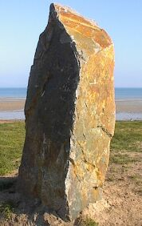
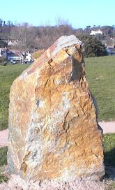
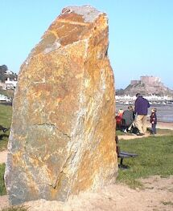

Grouville

The Jersey Field Squadron will be resiting Grouville's Millennium stone tomorrow morning to its correct position on the grassed area between Gorey Village coastal car park and the beach.
The stone was erected in November by the squadron in the right location but not the precise position.
Société Jersiaise president Philip Le Brocq, who came up with the idea of erecting the stones in each parish to mark the Millennium, said that there was a misunderstanding over the position when the work was being carried out due to a communications breakdown. He said that the problem has being dealt with amicably by the parish of Grouville, the squadron and the Société. The work will start at 10 am and is expected to take two hours to complete.
JEP 11/2/2000

Meanwhile, Grouville's own rolling stone finally came to rest, as the Jersey Field Squadron resited it to its correct position on the grassed area between Gorey Village coastal car park and the beach.
The stone was erected last November by the squadron, in the right location but not in precisely the right position, owing to what Société Jersiaise president Philip Le Brocq called 'a misunderstanding due to a communications breakdown' .
It was the Société which came up with the idea of erecting the stone in each parish to mark the Millennium.
JEP 14/2/2000
